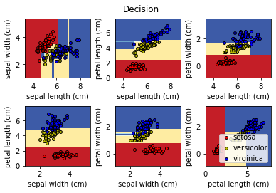
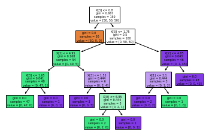

KNN Algorithm
4 weeks by kdh
Table of Contents
1 Decision Tree(의사결정나무)
지도학습 알고리즘 중의 하나이다. 지도학습은 정답이 있다. 정답 주는것을 레이블링 이라 한다.? 변수를 기반으로 분류하거나 예측하는데 사용하는 알고리즘이다. 용도에 따라서 분류나무(범주형) 혹은 회귀나무(수치형)라고도 함. 회귀는 예측이라고도 한다.(?) 종류로는 CART, C4.5, CHAID 이 있다. 각각 불순도알고리즘을 지니지수,엔트로피 지수, 카이제곱 통계량 을 쓴다. 수업에선 CART 를 사용해볼 것이다.
1.1 CART 분류, 회귀 다 쓰긴하지만 분류 목적으로 많이 사용한다 (예측에 대한 영역은 신경망, 회귀분석 알고리즘들이 더 우수한 경향을 보여서..)
1.1.1 이해하기 쉽고, 설명하기 용이함
1.1.2 많은 데이터가 필요함
1.1.3 속도가 느린편
크게 성능차이가 안나는 경우, 위의 장점을 토대로 고객에게 Decision Tree를 쓰게 된다.
1.2 실습
2 DecisionTree 분류기를 만든다.
CART 방식이다.
from sklearn import tree X=[[0, 0], [1, 1]] y = [0, 1] clf = tree.DecisionTreeClassifier() clf = clf.fit(X, y) # 학습시킨다. print(X) print(y)
2.0.1
clf.predict([[2, 2]])
2.0.2 y 값의 0이 나올 확률은 0이고, 1일 확률은 1이다.
clf.predict_proba([[2., 2]])
2.0.3 학습시켜서 모델을 만드므로 게이른 방식이 아닌다.
from sklearn.datasets import load_iris from sklearn import tree X, y = load_iris(return_X_y=True) clf = tree.DecisionTreeClassifier() clf = clf.fit(X, y) tree.plot_tree(clf) y
2.0.4 install graphviz
시각화를 좀 더 다르게 해보기 위해 graphviz 설치
pip install graphviz
2.0.5
지니지수가 높으면 분류가 잘 안된 경우이다.
import graphviz
iris = load_iris()
dot_data = tree.export_graphviz(clf, out_file=None)
graph = graphviz.Source(dot_data)
graph.render("iris")
dot_data = tree.export_graphviz(clf, feature_names=iris.feature_names,
class_names=iris.target_names, filled= True, rounded=True, special_characters=True)
graph = graphviz.Source(dot_data)
graph
2.1 실습2
2.1.1 모듈들을 불러드린다.
- numpy - 데이터를 저장할 방법으로numpy array 사용하겠다.
- matplotlib.pyplot 그래프 표현을 위해 matplotlib모듈들 내에 pyplot 모듈을 사용하겠다.
- sklearn.datasets 모듈내 iris 데이터셋을 활용하게 위해 loadiris 함수를 사용하겠다.
- sklearn.tree 모듈중 의사결정나무와, 표현방식으로 plottree를 사용하겠다.
import numpy as np import matplotlib.pyplot as plt from sklearn.datasets import load_iris from sklearn.tree import DecisionTreeClassifier, plot_tree
n_classes = 3 plot_colors = "ryb" plot_step = 0.02
iris = load_iris()
for pairidx, pair in enumerate([[0, 1], [0, 2], [0, 3], [1, 2], [1, 3], [2, 3]]):
X = iris.data[:, pair]
y = iris.target
clf = DecisionTreeClassifier().fit(X, y)
plt.subplot(2, 3, pairidx + 1)
x_min, x_max = X[:, 0].min() - 1, X[:, 0].max() + 1
y_min, y_max = X[:, 1].min() - 1, X[:, 1].max() + 1
xx, yy = np.meshgrid(np.arange(x_min, x_max, plot_step), np.arange(y_min, y_max, plot_step))
plt.tight_layout(h_pad=0.5, w_pad=0.5, pad=2.5)
Z = clf.predict(np.c_[xx.ravel(), yy.ravel()])
Z = Z.reshape(xx.shape)
cs = plt.contourf(xx, yy, Z, cmap=plt.cm.RdYlBu)
plt.xlabel(iris.feature_names[pair[0]])
plt.ylabel(iris.feature_names[pair[1]])
for i, color in zip(range(n_classes), plot_colors):
idx = np.where(y == i)
plt.scatter(X[idx, 0], X[idx, 1], c=color, label=iris.target_names[i], cmap=plt.cm.RdYlBu, edgecolors='black', s=15)
plt.suptitle("Decision")
plt.legend(loc='lower right', borderpad=0, handletextpad=0)
plt.axis("tight")
plt.figure()
<Figure size 432x288 with 0 Axes>

clf = DecisionTreeClassifier().fit(iris.data, iris.target) plot_tree(clf, filled=True)
[Text(167.4, 199.32, 'X[3] <= 0.8\ngini = 0.667\nsamples = 150\nvalue = [50, 50, 50]'), Text(141.64615384615385, 163.07999999999998, 'gini = 0.0\nsamples = 50\nvalue = [50, 0, 0]'), Text(193.15384615384616, 163.07999999999998, 'X[3] <= 1.75\ngini = 0.5\nsamples = 100\nvalue = [0, 50, 50]'), Text(103.01538461538462, 126.83999999999999, 'X[2] <= 4.95\ngini = 0.168\nsamples = 54\nvalue = [0, 49, 5]'), Text(51.50769230769231, 90.6, 'X[3] <= 1.65\ngini = 0.041\nsamples = 48\nvalue = [0, 47, 1]'), Text(25.753846153846155, 54.359999999999985, 'gini = 0.0\nsamples = 47\nvalue = [0, 47, 0]'), Text(77.26153846153846, 54.359999999999985, 'gini = 0.0\nsamples = 1\nvalue = [0, 0, 1]'), Text(154.52307692307693, 90.6, 'X[3] <= 1.55\ngini = 0.444\nsamples = 6\nvalue = [0, 2, 4]'), Text(128.76923076923077, 54.359999999999985, 'gini = 0.0\nsamples = 3\nvalue = [0, 0, 3]'), Text(180.27692307692308, 54.359999999999985, 'X[0] <= 6.95\ngini = 0.444\nsamples = 3\nvalue = [0, 2, 1]'), Text(154.52307692307693, 18.119999999999976, 'gini = 0.0\nsamples = 2\nvalue = [0, 2, 0]'), Text(206.03076923076924, 18.119999999999976, 'gini = 0.0\nsamples = 1\nvalue = [0, 0, 1]'), Text(283.2923076923077, 126.83999999999999, 'X[2] <= 4.85\ngini = 0.043\nsamples = 46\nvalue = [0, 1, 45]'), Text(257.53846153846155, 90.6, 'X[1] <= 3.1\ngini = 0.444\nsamples = 3\nvalue = [0, 1, 2]'), Text(231.7846153846154, 54.359999999999985, 'gini = 0.0\nsamples = 2\nvalue = [0, 0, 2]'), Text(283.2923076923077, 54.359999999999985, 'gini = 0.0\nsamples = 1\nvalue = [0, 1, 0]'), Text(309.04615384615386, 90.6, 'gini = 0.0\nsamples = 43\nvalue = [0, 0, 43]')]
